Paizo Minis — Print Tracker
32 mm prints for the Pathfinder game · Elegoo Mars 5 Ultra · generated from PRINTS.md
214/228parts printed
14remaining
3ready to deliver
58awaiting Brian
1to reprint
1failures
175mm-blank bases to print
202610 October Release
30 of 36 parts · 83%Bases still needed: 4× 25mm

P0069_Monk_Sajan_WP6
main · review Oct 6 Dragonmain @32mm-siraya · review Oct 28 Siraya Tech Fast Gray

P0070_Sorcerer_Seoni_WP6
main · review Oct 6 Dragonmain @32mm-siraya · review Oct 28 Siraya Tech Fast Gray

P0071_Swashbuckler_Jirelle_WP6
main · review Oct 6 Dragonmain @32mm-siraya · review Oct 28 Siraya Tech Fast Gray

Fortune Dragon75mm
P0072_Fortune_Dragon_WP6
Body · review Oct 28 Siraya 15% TenaciousBody @32mm-paco · todo Oct 28Head · review Oct 28 SirayaTech Fast + 15% TenaciousHead @32mm-paco · ready Oct 29 SirayaTech Fast + 15% TenaciousWingL · review Oct 28 SirayaTech Fast + 15% TenaciousWingL @32mm-paco · ready Oct 29 SirayaTech Fast + 15% TenaciousWingR · review Oct 28 SirayaTech Fast + 15% TenaciousWingR @32mm-paco · sliced Oct 29 SirayaTech Fast + 15% Tenacious


P0076_Elemental_Earth_Living_Landslide_WP6
main · review Oct 6 Dragon

P0077_Elemental_Fire_Living_Wildfire_WP6
main · review Oct 28 8K Std

P0078_Elemental_Water_Brine_Shark_WP6
main · skipped Oct 6with Base · review Oct 28 Dragon

Dhampirs25mm
P0101_Dhampir_S3P1
A · ready Oct 29 Siraya 15% TenaciousB · review Oct 28 Siraya Tech Fast GrayC · review Oct 28 Siraya Tech Fast Gray

Coven Aspirant25mm
P0102_Coven Aspirant_S3P1
main · review ⚠ Oct 28 8K Stdmain @32mm-blend · review Oct 28 Fast + 15% Tenacious

Scarecrow25mm
P0103_Scarecrow_S3P1
main · review Oct 28 8K Stdmain @32mm-blend · review Oct 28 Fast + 15% Tenacious

Werewolf25mm
P0104_Werewolf_S3P1
main · review Oct 28 8K Stdmain @32mm-blend · review Oct 28 Fast + 15% Tenacious

Wights25mm
P0105_Wight_S3P1
A · review Oct 28 8K StdA @32mm-paco · todo Oct 28B · review Oct 28 8K StdB @32mm-paco · todo Oct 28C · review Oct 28 8K StdC @32mm-paco · todo Oct 28

202610 October extras sale
1 of 1 parts · 100%
Paizo_giant_cave_centepiede_Supported
main · review Oct 28 Fast + 15% Tenacious Gray
202609 September Release
16 of 19 parts · 84%Bases still needed: 3× 25mm
Athamaru25mm
P0094_Athamaru_S2P3
A · review Oct 28 Fast + 15% Tenacious GrayB · review Sep 30 DragonC · approved Oct 6 Dragon
Draugr25mm
P0097_Draugr_S2P3
A · review Sep 30 DragonA @32mm-paco · todo Oct 28B · review Sep 30 DragonB @32mm-paco · todo Oct 28C · review Sep 30 DragonC @32mm-paco · todo Oct 28
Reefclaw25mm
P0098_Reefclaw_S2P3
A · review Sep 30 DragonB · review Sep 30 DragonC · review Sep 30 Dragon
Gutaki50mm
P0099_Gutaki_S2P3
Body · review Sep 30 DragonTentacles L · review Sep 30 DragonTentacles R · review Sep 30 Dragon

Scylla75mm
P0100_Scylla_S2PB
Body · review Oct 5 DragonFull · skipped Sep 14Tentacles · review Sep 30 Dragon
202608 August Release
10 of 11 parts · 91%Bases still needed: 1× 25mm

Cheliax Marine25mm
P0088_Cheliax_Marine_S2P2
A · printed Sep 8 ABS-likeB · printed Sep 8 ABS-likeC · printed Sep 8 ABS-like


Deep One25mm
P0091_Deep_One_S2P2
A · printed Sep 8 ABS-likeB · printed Sep 8 ABS-likeC · printed Sep 8 ABS-like

Flotsam Terror25mm
P0092_Flotsam_Terror_S2P2
Arms · skipped Sep 11Body · skipped Sep 11Full · printed Sep 8 ABS-likeFull @32mm-paco · todo Oct 28

202608 August extras sale
34 of 36 parts · 94%Bases still needed: 2× 25mm

PQ0030_Hellknight_Chargers
PQ0030A1 · printed Sep 8 ABS-likePQ0030A2 · printed Sep 8 ABS-likePQ0030B1 · printed Sep 8 ABS-likePQ0030B2 · printed Sep 8 ABS-likePQ0030C1 · printed Sep 8 ABS-likePQ0030C2 · printed Sep 8 ABS-likePQ0030D · printed Sep 8 ABS-like

Dread Zombie25mm
PQ0041_Dread_Zombie
Zombie · printed Sep 8 ABS-likeZombie (32mm) · printed Sep 8 ABS-likeZombie (32mm) @32mm-paco · todo Oct 28

Paizo_Augustana_irregulars_A_Supported
A · review Sep 30 DragonB · review Sep 30 DragonC · review Sep 30 Dragon


Paizo_Hellknight_Sharpshooters_Supported
SharpshootersA3 · printed Sep 8 ABS-likeSharpshootersB3 · printed Sep 8 ABS-likeSharpshootersC3 · printed Sep 8 ABS-like

Paizo_Ironkettles_wall_Supported
wallA · printed Sep 8 ABS-likewallB · printed Sep 8 ABS-likewallC · printed Sep 8 ABS-like

Merandal's Hawks25mm
Paizo_Merandals_Hawks_Supported
A · printed Sep 8 ABS-likeB · printed Sep 8 ABS-likeC · printed Sep 8 ABS-like

Paizo_Signifers_Supported
A · review Sep 30 DragonB · printed Sep 8 ABS-likeC · printed Sep 8 ABS-like

Paizo_bastions_Supported
A supp · review Sep 30 DragonB · review Sep 30 DragonC · review Sep 30 Dragon


Paizo_goblin_spellcaster_Supported
main · printed Sep 8 ABS-like

Paizo_orc_malee_Supported
32mm Paizo PFQ orc malee · printed ⚠ Sep 8 ABS-likePaizo PFQ orc malee Supported · printed Sep 8 ABS-like
202607 July release
25 of 25 parts · 100%


Horned Dragon50mm
P0059_Horned_Dragon_WP4
Body · primed Oct 5 DragonRocks · primed Oct 5 DragonWingL · primed Oct 5 DragonWingR · primed Oct 5 Dragon


Goblin Commando25mm
P0063_Goblin_Commando_WP4
Barrel · printed Sep 8 8K Stdmain · printed Sep 8 8K Std


Grindylow25mm
P0085_Grindylow_S2P1
A · printed Sep 8 8K StdB · printed Sep 8 8K StdC · printed Sep 8 8K Std

Sea Hag25mm
P0086_Sea_Hag_S2P1
Body · printed Sep 8 8K StdFull · skipped Sep 11Tentacles · printed Sep 8 8K Std

202606 June Release
19 of 20 parts · 95%Bases still needed: 1× 25mm


P0044_Order_of_the_Gate_Hellknight_S1P3
A Arm · printed Sep 8 8K StdA Body · printed Sep 8 8K StdA Cape · printed Sep 8 8K StdB Arm · printed Sep 8 8K StdB Body · printed Sep 8 8K StdC Arm · printed Sep 8 8K StdC Body · printed Sep 8 8K Std


P0046_Skeletal_Hellknight_Bonesinger_S1P3
Fixed Hand · printed Sep 8 8K StdFixed Hand @32mm-paco · todo Oct 28


P0048_Nessari_Tyrant_Devil_S1P3
Body · printed Sep 8 8K StdWingL · printed Sep 8 8K StdWingR · printed Sep 8 8K Std

Abrogail Adamant75mm
P0049_Abrogail Adamant_S1PB
Body · printed Sep 8 8K StdLegs · printed Sep 8 8K Std

202605 May Release
35 of 35 parts · 100%
Andoran Soldier25mm
1-P0033_Andoran_Soldier_S1P2
A · printed Sep 8 8K StdB · printed Sep 8 8K StdC · printed Sep 8 8K Std

1-P0034_Cheliax_Soldier_S1P2
A · printed Sep 8 8K StdB · printed Sep 8 8K StdC · printed Sep 8 8K Std

1-P0035_Gylou_S1P2
body · printed Sep 8 8K Stdtentacles · printed Sep 8 8K Std

1-P0036_Phistophilus_S1P2
Body · printed Sep 8 8K StdHorn L · printed Sep 8 8K StdHorn R · printed Sep 8 8K Std


Arboreal Warden50mm
4-P0032_Arboreal_Warden_WP2
arm L · printed Sep 8 8K Stdarm R · printed Sep 8 8K Stdarm head · printed Sep 8 8K Stdbody · printed Sep 8 8K Stdshoulder · printed Sep 8 8K Std

4-P0042_Vidileth_WP2_STL
main · printed Sep 8 8K Stdwith Base · printed Sep 8 8K Std

5-P0029_Ort Druge Devil_S1P1
A · printed Sep 8 8K StdB · printed Sep 8 8K StdC · printed Sep 8 8K Std

6-P0031_Sarglagon Drowning Devil_S1P1
Arm L · review Oct 4 DragonArm R · printed Sep 14 DragonBody · printed Sep 8 8K StdTail · printed Sep 8 8K StdTail with Base · printed Sep 8 8K Std
202604 April Release
27 of 28 parts · 96%Bases still needed: 1× 25mm


P0006_Lini_Iconic_Druid_with_Droogami_WP1
Droogami · printed Sep 8 8K Stdmain · printed Sep 8 8K Std


P0008_Feiya_Iconic_Witch_with_Daji_WP1
Fox · printed Sep 8 8K Stdmain · printed Sep 8 8K Std


P0030_Vordine Infantry Devil_S1P1
A · printed Sep 8 8K StdB · printed Sep 8 8K StdC · printed Sep 8 8K Std
Paizo_lurker_in_light__Supported25mm
Paizo_lurker_in_light__Supported
main · printed Sep 8 8K Std
202604 Dragons
17 of 17 parts · 100%
Mirage Dragon75mm
P0009_Mirage Dragon_WP1
Base · printed Sep 8 8K StdBody · printed Sep 8 8K StdHead · printed Sep 8 8K StdWing L · printed Sep 8 8K StdWing R · printed Sep 8 8K Std

Diabolic Dragon75mm
P0010_Diabolic Dragon_WP1
Body · printed Sep 8 8K StdHead · printed Sep 8 8K StdWing L · printed Sep 8 8K StdWing R · printed Sep 8 8K Std

Empyreal Dragon50mm
P0011_Empyreal Dragon_WP1
Body · printed Sep 8 8K StdHead · printed Sep 8 8K StdTail · printed Sep 8 8K StdWing L · printed Sep 8 8K StdWing R · printed Sep 8 8K Std

Horned Dragon25mm
P0025_Horned_Dragon_WP1
Body · printed Sep 8 8K StdWing L · printed Sep 8 8K StdWing R · printed Sep 8 8K Std
Plates
| Plate | ID | Date | Slicer file | Resin | Layer | Exposure | Bottom exp | Bottom layers | Lift | Bases | Result | Notes |
|---|---|---|---|---|---|---|---|---|---|---|---|---|
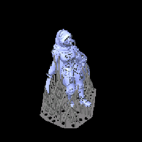 | P2610-24 | 2026-10-28 | 32mm_P0101_Dhampir_A_S3P1_STL_1_202610280920.goo | Siraya 15% Tenacious | 0.03mm | 2.1s | 27.0s | 5 | Dhampir A alone, a reprint in the blend after the straight-Fast print (P2610-06) was broken: its RIGHT ARM SNAPPED OFF when the cured mini was dropped from table height onto a chair (Logan, 2026-10-28). SatelLite slice 2026-10-28 09:20, 2.1 s, 27 s x 5, profile 'Siraya 15% Tenacious' as the file names it. Printed; the right arm came out fine, cleaned and cured, ready for Brian (Logan, 2026-10-29). | |||
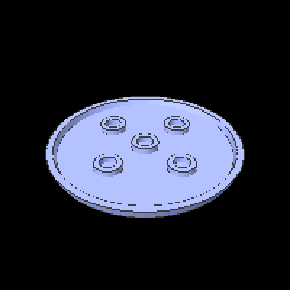 | P2610-23 | 2026-10-25 | Round_75_1_202610251110-deburr9.goo | Siraya 15% Tenacious 50um | 0.05mm | 3.0s | 27.0s | 5 | 1x 75mm-blank | pass | A repeat of P2610-21: the same 75mm Round base slice (SatelLite 2026-10-25 11:10, deburr 9, 50 um, 3.0 s, 27 s x 5, 'Siraya 15% Tenacious 50um') printed manually from the printer's history, the second of the two Logan ran after P2610-21 (2026-10-25/26). Settings are the file's; Logan did not say he changed any. Printed clean and cured (Logan, 2026-10-26). The Date column is the slice's date, not the print date, which was not stated. | |
 | P2610-22 | 2026-10-25 | Round_75_1_202610251110-deburr9.goo | Siraya 15% Tenacious 50um | 0.05mm | 3.0s | 27.0s | 5 | 1x 75mm-blank | pass | A repeat of P2610-21: the same 75mm Round base slice (SatelLite 2026-10-25 11:10, deburr 9, 50 um, 3.0 s, 27 s x 5, 'Siraya 15% Tenacious 50um') printed manually from the printer's history, the first of the two Logan ran after P2610-21 (2026-10-25/26). Settings are the file's; Logan did not say he changed any. Printed clean and cured (Logan, 2026-10-26). The Date column is the slice's date, not the print date, which was not stated. | |
 | P2610-21 | 2026-10-25 | Round_75_1_202610251110-deburr9.goo | Siraya 15% Tenacious 50um | 0.05mm | 3.0s | 27.0s | 5 | 1x 75mm-blank | pass | One plain 75mm Round base (preview: a disc with a raised rim and five small rings on top), flat on the plate at 50 um, the 2026-10-25 11:10 SatelLite slice put through 9 tapered deburr passes (layer 0 4029 -> 4011 px, 72.522 -> 72.198 mm, 0.324 mm off the diameter). The mesh's own bottom edge is beveled, so layer 0 is 72.5 mm against 75.00 mm higher up (Logan, 2026-10-25). Settings are the file's: profile 'Siraya 15% Tenacious 50um', 3.0 s, 27 s x 5, transition 7; the vat holds the 15% blend (Logan), which matches the profile name. The ten 25 mm bases that printed on P2610-20 used the same settings. First 75 mm base in the blend, and a far larger contact patch than the 25 mm ones (about 4100 mm2 against 475 mm2). Sent to the printer 2026-10-25; the log showed no print running when recorded. RESULT (Logan, 2026-10-25): printed really well, and the flexibility of the material let him pop it off the plate easily. No rim measurements given, so no flare figure for the 75 mm. Whether it warped or cupped was not mentioned. Cured (Logan, 2026-10-26); two more were printed from the same slice, P2610-22 and P2610-23. | |
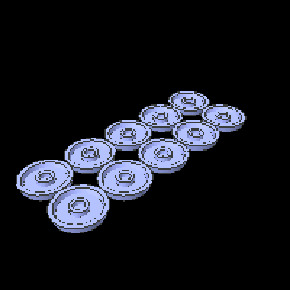 | P2610-20 | 2026-10-25 | 10xRound_25_1_202610091417-deburr9.goo | Fast + 15% Tenacious | 0.05mm | 3.0s | 27.0s | 5 | 10x 25mm-blank | pass | Ten 25mm plain bases (Round 25) flat on the plate at 50 um, the 2026-10-09 SatelLite slice put through 9 tapered deburr passes (layer 0 6945 -> 6927 px, 0.324 mm off the diameter; UVtools re-save, so lift 0.05 in the file). Sent to the printer and started 2026-10-25 (Logan). The file's profile names 'Gray 8K Std 50um' and 2.0 s, but the vat held the LAST OF THE BLEND (Logan), so the resin is recorded as the blend by his statement, not the file. Normal exposure was set to 3.0 s on the printer (Logan), not the file's 2.0 s; the runlog's transition ramp steps by 4.8 s per layer (22.2, 17.4, 12.6 s), which is (27 - 3.0)/5 and not the 5.0 s a 2.0 s file would give. Bottom 27 s x 5 layers, transition 4, from the file. A cheap first test of the blend at 50 um: my estimate for the right exposure was about 2.5 s (range 2.2-3.0), so 3.0 s sits at the top, a deliberately generous choice. The flare, 12 s floor and 0.036 mm per pass numbers are Dragon-resin figures and untested on the blend. RESULT (Logan, 2026-10-25): all ten printed very well. Measured across the rim: 23.74 mm at the low point where they contact the plate, 24.36 mm at mid-height. Whether measured green or cured was not stated. The deburr 9 chamfer was designed to take 0.162 mm off the radius; the bottom is 0.62 mm smaller in diameter than the mid-height, 0.31 mm of radius, so there is no elephant foot and the bevel is about twice the design. The slice's own settled diameter is about 24.52 mm, so mid-height is 0.16 mm under it. | |
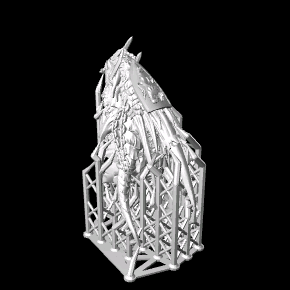 | P2610-25 | 2026-10-24 | P0072_Fortune_Dragon_Head_WP6_PRE.goo | SirayaTech Fast + 15% Tenacious | 0.03mm | 2.1s | 27.0s | 5 | Second Fortune Dragon for PACO (Logan, 2026-10-29): reprinted from history on the printer, the stored file of P2610-19 (Lychee 8 vendor-presupported slice, unchanged). The Date is the slice file's own date; the actual print day was not stated. Printed, ready (Logan, 2026-10-29). | |||
 | P2610-19 | 2026-10-24 | P0072_Fortune_Dragon_Head_WP6_PRE.goo | SirayaTech Fast + 15% Tenacious | 0.03mm | 2.1s | 27.0s | 5 | pass | Fortune Dragon Head alone, the last of its four parts. Lychee Slicer 8.0.0 from the vendor's PRE.lys, true-scale: 1692 layers = 50.76 mm, matching the true-scale _SUP mesh's Z of 50.75 mm (the 32mm_ one is 58.98 mm). Same recipe and waits as the wings (P2610-17, -18): 'SirayaTech Fast + 15% Tenacious', 2.1 s, 27 s x 5, transition 6, 1 s before and after cure, 0 after lift. Screened clear: 251 islands, largest 421px2@35.22mm, 0 cups, 260 traps. Started 2026-10-24 (Logan); the log shows a passed probe and the first layer executing at 27 s with 2 s rests, as the file says. Printed clean (Logan, 2026-10-25). | ||
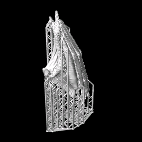 | P2610-27 | 2026-10-23 | P0072_Fortune_Dragon_WingR_WP6_PRE.goo | SirayaTech Fast + 15% Tenacious | 0.03mm | 2.1s | 27.0s | 5 | Second Fortune Dragon for PACO (Logan, 2026-10-29): reprinted from history on the printer, the stored file of P2610-17 (Lychee 8 vendor-presupported slice, unchanged). The Date is the slice file's own date; the actual print day was not stated. Printing as of 2026-10-29 (runlog showed layer ~517 of 3755). | |||
 | P2610-26 | 2026-10-23 | P0072_Fortune_Dragon_WingL_WP6_PRE.goo | SirayaTech Fast + 15% Tenacious | 0.03mm | 2.1s | 27.0s | 5 | Second Fortune Dragon for PACO (Logan, 2026-10-29): reprinted from history on the printer, the stored file of P2610-18 (Lychee 8 vendor-presupported slice, unchanged). The Date is the slice file's own date; the actual print day was not stated. Printed, ready (Logan, 2026-10-29). | |||
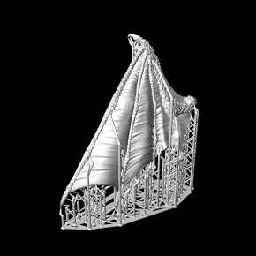 | P2610-18 | 2026-10-23 | P0072_Fortune_Dragon_WingL_WP6_PRE.goo | SirayaTech Fast + 15% Tenacious | 0.03mm | 2.1s | 27.0s | 5 | pass | Fortune Dragon WingL alone, the companion to WingR (P2610-17). Lychee Slicer 8.0.0 from the vendor's PRE.lys, true-scale: 3481 layers = 104.43 mm, matching the true-scale _SUP mesh's Z of 104.41 mm (the 32mm_ one is 122.3 mm), footprint 95.6 x 43.6 mm. Profile 'SirayaTech Fast + 15% Tenacious': 2.1 s, 27 s x 5, transition 6, and the same waits as P2610-17 (1 s before and after cure, 0 after lift; bottom 2 s each), on purpose, so the two wings compare. Screened clear: 101 islands, largest 265px2@54.63mm, one cup of 22314px3 (about 0.22mm3) at 61.95mm, 189 traps. Sliced and sent without starting, then started by Logan the evening of 2026-10-23: the log shows the start command, calibration and a probe that passed (no resin-level error), so the vat level was right this time. Finished and came off clean (Logan, 2026-10-24). | ||
 | P2610-17 | 2026-10-23 | P0072_Fortune_Dragon_WingR_WP6_PRE.goo | SirayaTech Fast + 15% Tenacious | 0.03mm | 2.1s | 27.0s | 5 | pass | Fortune Dragon WingR alone, the reprint after P2610-16 was damaged in support removal. Sliced in LYCHEE SLICER 8.0.0 from the vendor's P0072_Fortune_Dragon_WingR_WP6_PRE.lys, true-scale mesh: 3755 layers = 112.65 mm, which is exactly the Z of the true-scale _SUP mesh, so it is the vendor's orientation and, as far as the height can show, the vendor's supports (not stated whether Logan regenerated them). Profile 'SirayaTech Fast + 15% Tenacious' (the file's name, brand prefix included): 2.1 s, 27 s x 5, transition 6. Waits as printed: before cure 1 s, AFTER CURE 1 s, after lift 0 s, bottom 2 s before and after cure. Logan changed Lychee's 'Wait After Print' to 1 s meaning rest after lift, but that field writes WaitTimeAfterCure; SatelLite's blend slices rest 1 s after lift + 1 s before cure, so the rest after the peel here is 1 s, not 2. Logan chose to print as it is (2026-10-23). Screened WATCH: 38 islands, one of 1049px2 at 57.42mm and 793px2 at 57.15mm, 0 cups, 71 traps. The first Lychee-sliced plate on record. Printing; log showed layer ~70 at 12.4 s per layer. Finished and came through support removal clean (Logan, 2026-10-24). Screen flag inspected 2026-10-23: WingR came through support removal clean and much easier than EVO supports (Logan, 2026-10-24); the 57.42mm island was not singled out | ||
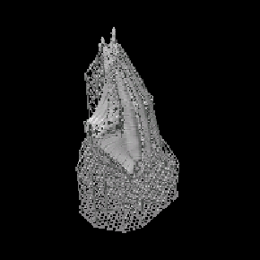 | P2610-16 | 2026-10-22 | P0072_Fortune_Dragon_WingR_WP6_STL_1_202610222125.goo | Siraya 15% Tenacious | 0.03mm | 2.1s | 27.0s | 5 | fail | Fortune Dragon WingR alone, true-scale mesh, SatelLite auto supports, blend profile ('Siraya 15% Tenacious' in the file), 3796 layers = 113.9 mm, about 19.5 g. It SCREENED CLEAR (8 islands, largest 188px2@51.96mm, 2 tiny cups) and printed, but the wing was DAMAGED DURING SUPPORT REMOVAL (Logan, 2026-10-23); where and how is not stated. Another case where a clear screen says nothing about support strength. Printer file is the 21:25 re-save of the 21:23 slice (same size, 115,482,320 bytes). | ||
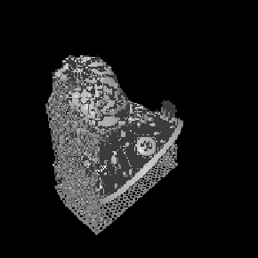 | P2610-15 | 2026-10-22 | P0072_Fortune_Dragon_Body_WP6_STL_2_202610221044-uvtools-solidify.goo | Siraya 15% Tenacious | 0.03mm | 2.1s | 27.0s | 5 | pass | Fortune Dragon Body alone (preview shows one large model; taken to be the Body, the Head is a separate part and is not assumed to be on it), true-scale mesh, 3409 layers = 102.3 mm, about 143 g, 7h48m. The slice was SatelLite's 10:44 file put through UVtools Solidify from layer 300 (Logan, 2026-10-22): cups 52 -> 0, trapped resin 140.8 -> 0.0 mm3, resin traps 6820 -> 874, islands 925 -> 884, largest island unchanged at 983px2@92.49mm. Screened clear on the file as it sits on the printer (884 islands, 0 cups). Resin profile is named 'Siraya 15% Tenacious' in the file, recorded as written; it is the blend, 2.1 s, 27 s x 5. A separate unsolidified re-save of the same slice (10:55) is also on the printer and was NOT the one printed. FIRST START ABORTED at about 11:12 with printer error -8, 'resin pos is abnormal high: 21.45, max line value 21.0': the vat was too full (Logan); the log confirms the probe stopped it a minute in. Logan lowered the resin and restarted, and the second probe passed (2026-10-22). Printed successfully and cleaned (Logan, 2026-10-22). | ||
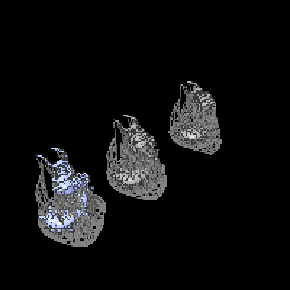 | P2610-14 | 2026-10-18 | Paizo_PFQ_giant_cave_centepiede_1_202610181148.goo | Fast + 15% Tenacious Gray | 0.03mm | 2.1s | 27.0s | 5 | Giant Cave Centipede, three on one plate (preview shows three), the second slice of it: SatelLite 2026-10-18 11:48, 1134 layers = 34.02mm, the same height as the 2026-10-11 slice in the folder, which this replaces. Blend profile as the file names it, 2.1 s, 27 s x 5 bottom layers. Brian asked for three (Logan). Printed UNSCALED on purpose to judge the size; base to be settled with Brian after the print (Logan, 2026-10-18). Finished and cleaned (Logan, 2026-10-19). Result left blank: he said it finished, not how it came out. | |||
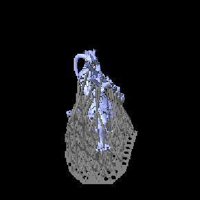 | P2610-13 | 2026-10-11 | 32mm_P0094_Athamaru_A_S2P3_STL_1_202610112205.goo | Fast + 15% Tenacious Gray | 0.03mm | 2.1s | 27.0s | 5 | Athamaru A alone, the reprint after the trident snapped on 8K Standard (P2610-11). First plate sliced with the blend's own profile (file names it 'Fast + 15% Tenacious Gray'): 2.1 s, 27 s x 5 bottom layers, as settled. SatelLite slice 2026-10-11 22:05, sent to the printer and printing (Logan, 2026-10-11). A thin-part test of the blend: the trident is what broke. Printed and cleaned (Logan, 2026-10-19); the trident survived support removal. | |||
 | P2610-12 | 2026-10-09 | 32mm_P0102_P0103_P0104_S3P1_STL_1_202610090754.goo | Fast + 15% Tenacious | 0.03mm | 2.1s | 27.0s | 4 | pass | The same slice as P2610-10 (SatelLite 2026-10-09 07:54), reprinted from the printer's history in the 15% Tenacious blend as an alternate beside the 8K Standard copies, to see which is preferred (Logan, 2026-10-11). Exposure was set on the printer to 2.1 s, so the recorded exposure is Logan's statement, not what the file says (1.9 s). Resin likewise: the file's profile names Space Grey 8K Standard, and Logan says the vat held Siraya Fast + about 15% Tenacious. Bottom 27 s x 4 layers is from the file, not the 5 layers agreed for blend plates, because the file was reused. Printed successfully (Logan, 2026-10-11); print date not stated. | ||
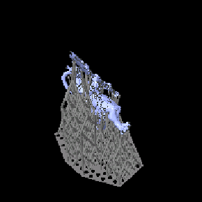 | P2610-11 | 2026-10-09 | 32mm_P0094_Athamaru_A_S2P3_STL_1_202610091347.goo | Space Grey 8K Standard | 0.03mm | 1.9s | 27.0s | 4 | fail | Athamaru A alone (preview shows one model), the third attempt after Brian's two rejections; SatelLite slice 2026-10-09 13:47. FAILED (Logan, 2026-10-11): it printed, but the trident snapped while the supports were removed; Logan reads the standard resin as too brittle. Not a failure to print and not seen by Brian. | ||
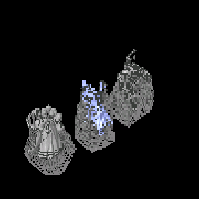 | P2610-10 | 2026-10-09 | 32mm_P0102_P0103_P0104_S3P1_STL_1_202610090754.goo | Space Grey 8K Standard | 0.03mm | 1.9s | 27.0s | 4 | Coven Aspirant, Scarecrow and Werewolf, SatelLite slice 2026-10-09 07:54, on the printer 2026-10-09 (Logan). Preview shows three models. | |||
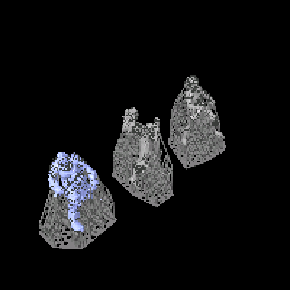 | P2610-09 | 2026-10-08 | 32mm_P0105_Wight_ABC_S3P1_STL_1_202610082212.goo | Space Grey 8K Standard | 0.03mm | 1.9s | 27.0s | 4 | Wights A, B and C, SatelLite slice 2026-10-08 22:12, on the printer 2026-10-08 (Logan). Preview shows three models. | |||
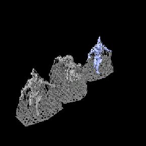 | P2610-08 | 2026-10-08 | 32mm_P0075_Elemental_Air_Phade_WP6_STL_1_202610080822.goo | Space Grey 8K Standard | 0.03mm | 1.9s | 27.0s | 4 | Air (Phade) and TWO Fire (Living Wildfire) elementals at the 32mm heroic size, printing 2026-10-08 at Brian's request (Logan). Preview shows three models. The slice is 1583 layers = 47.49mm, which is the 42.67mm 32mm_ Fire mesh plus a ~5mm lift (standard Fire is 37.10mm), so this is the 32mm_ family, about 1.15x the standard prints on P2610-04. Resin 'Space Grey 8K Standard', as the file names it. 1.9s exposure and 4 bottom layers differ from the Dragon plates; runlog agrees on 1.9s (6.8s per layer). | Printed and cleaned 2026-10-08 (Logan). Replaces the standard-scale Air and Fire on P2610-04, which Brian rejected as too small. | ||
| — | P2610-07 | 2026-10-07 | 32mm_P0069-P0071_WP6_STL_1_202610050927.goo | Siraya Tech Fast Gray | 0.03mm | 1.8s | 27.0s | 2 | Second set of Sajan, Seoni and Jirelle in Siraya Tech Fast, as a resin test against the Dragon set on P2610-02 (Logan, 2026-10-08). Slicer file is 32mm_P0069-P0071_WP6_STL_1_202610050927.goo (Logan, 2026-10-09), which was on the printer; Logan printed it from history through the printer's local interface and changed the exposure settings there manually, so the recorded settings are his statement that it ran the same as the Dhampir plate P2610-06 (Siraya Tech Fast Gray, 0.03mm, 1.8s, 27s x 2 bottom), not what the file says. Printed 2026-10-07, cleaned and cured. Seoni's finest weapon protrusion broke off during support removal; Sajan and Jirelle had no issues (Logan, 2026-10-08). | |||
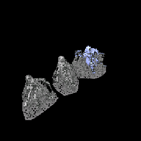 | P2610-06 | 2026-10-07 | 32mm_P0101_Dhampir_ABC_S3P1_STL_1_202610072338.goo | Siraya Tech Fast Gray | 0.03mm | 1.8s | 27.0s | 2 | Dhampirs A, B and C, SatelLite slice 2026-10-07 23:38, Siraya Tech Fast Gray. A 0.05mm twin of the same slice (23:37, 851 layers) is also on the printer; Logan confirmed the 0.03mm one printed. Printed, cleaned and cured (Logan, 2026-10-08). Minor support nubs left on the cloaks. | |||
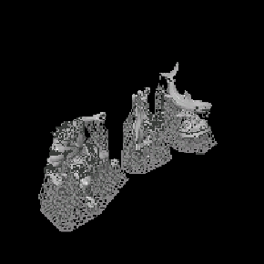 | P2610-05 | 2026-10-06 | P0078_Elemental_Water_Brine_Shark_with_Base_P0106_Charnel_Creation_and_Grave_Knight_STL_1_202610061539.goo | Dragon Resin Durable Grey | 0.03mm | 2.8s | 27.0s | 5 | Brine Shark (with Base build), Charnel Creation and the Graveknight reprint, sliced and printing 2026-10-06 (Logan). Preview shows all three. The Brine Shark 'main' build is marked skipped: this plate carries the with_Base one. Not screened: 25mm models, and Charnel Creation (50mm) was sliced without a screen. | |||
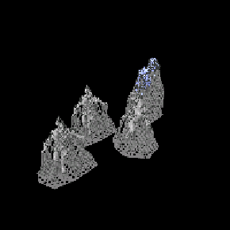 | P2610-04 | 2026-10-06 | P0075-P0077_Elementals_WP6_STL_1_202610060909.goo | Dragon Resin Durable Grey | 0.03mm | 2.8s | 27.0s | 5 | Air, Earth and TWO Fire (Living Wildfire) elementals, sent to the printer 2026-10-06 (Logan), SatelLite slice, 1596 layers = 47.88mm. STANDARD true-scale meshes, the smaller size Brian asked for: the tallest model slices at 42.87mm above a 5.01mm lift, which is the standard Earth mesh (42.88mm) and not the 32mm_ one (49.31mm). Not measured on the other three. SatelLite solidified one cavity in the first 100 layers of the earth elemental (Logan). Screened: cups 260 but only 1.2mm3 above the raft. FIX verdict on two islands, 67459px2 and 57022px2 at 5.01mm (layer 167): the two soles of the EARTH elemental (Logan, 2026-10-06), each about 20mm2 of flat foot entering in one layer on a dense cloud of tip contacts. About 25x the largest island on any clean print on record (2326px2). Look at that height when it comes off. Printing as sliced anyway, as a test: the vendor's pre-supported model has the same layout (Logan). Whether SatelLite's tip cloud holds the soles is the question this print answers. Screen flag inspected 2026-10-06: Earth elemental soles at 5.01mm held; printed and cleaned (Logan, 2026-10-06) Printed, cleaned and cured (Logan, 2026-10-06); the Earth elemental soles held. | |||
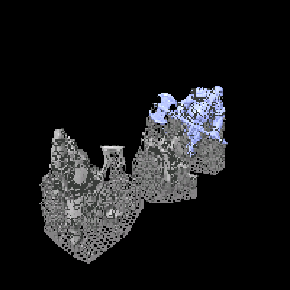 | P2610-03 | 2026-10-05 | 32mm_P0094_C_P0073_and_P0074_STL_1_202610051527-uvtools-solidify.goo | Dragon Resin Durable Grey | 0.03mm | 2.8s | 27.0s | 5 | Ogre Glutton, Ogre Boss and Athamaru C (reprint). Printed from the UVtools-solidified slice (Solidify from layer 100): cups 287 -> 280, resin traps 2694 -> 25, islands 648 -> 594, largest island unchanged at 1704px2@17.70mm, nothing trapped above the raft. Lift values carry 0.05 from the UVtools re-save. | |||
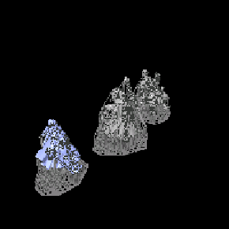 | P2610-02 | 2026-10-05 | 32mm_P0069-P0071_WP6_STL_1_202610050927.goo | Dragon Resin Durable Grey | 0.03mm | 2.8s | 27.0s | 5 | Sajan, Seoni and Jirelle on one plate. The file on the printer is 32mm_P0069_Monk_Sajan_WP6_STL_1_202610051106.goo, the same slice re-saved at 11:06 (same 67,564,051 bytes and identical preview as this 09:27 one), named after its first model. Dragon resin baseline for the Siraya Tech Fast comparison (Seoni printed very well). | |||
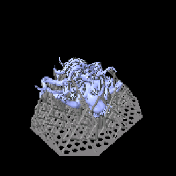 | P2610-01 | 2026-10-04 | P0100_Scylla_Body_S2PB_STL_1_202610041450.goo | Dragon Resin Durable Grey | 0.03mm | 2.8s | 27.0s | 5 | Scylla Body reprint, after Brian rejected the P2609-20 body for too much support scarring on its back side (Logan, 2026-10-04). Sliced in ELEGOO SatelLite at 14:50 on 2026-10-04 and rotated to match the vendor's pre-supported orientation, so the support contacts land where the vendor put them rather than where SatelLite's own orientation did. PRINTED 2026-10-04, not yet cleaned. 880 layers = 26.40mm. The orientation and family check out against the vendor's own pre-supported STANDARD body (P0100_Scylla_Body_S2PB_SUP): that mesh stands 27.47mm against this slice's 26.40, and holds 4,075mm3 of model plus supports against this slice's 3,823 - where the 32mm_ pre-supported body is 31.51mm and 5,728mm3. Standard is right for a Huge creature. Screened after printing, for the record: CLEAR, 85 islands, largest 525px2 at 14.40mm; 143 cups, all the 2.6mm3 raft cells, with 0.6mm3 trapped above the raft. Whether the vendor orientation keeps the scarring off the visible back is Brian's call at review | |||
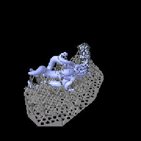 | P2609-38 | 2026-09-30 | P0031_Sarglagon_Drowning_Devil_Arm_L_S1P1_STL_1_202609301008.goo | Dragon Resin Durable Grey | 0.03mm | 2.8s | 27.0s | 5 | Sarglagon (Drowning Devil) Arm L, the arm Brian actually rejected for a flat spot on one tentacle - it had been recorded against Arm R, and P2609-19 reprinted the wrong arm (Logan, 2026-09-30). Sliced in ELEGOO SatelLite at 09:56 on 2026-09-30, sliced and not yet on the printer; screened from the sweeps/ copy and the preview cached from it for that reason. SatelLite wrote it (LiftHeight 0). SCREENED CLEAR: 44 islands, largest 185px2 at 15.78mm; 227 cups, all but a handful the 2.6mm3 raft cells, 0.8mm3 trapped above the raft - nothing to solidify. MESH FAMILY is standard: the filename has no 32mm_ prefix, and 1029 layers = 30.87mm is the standard arm's 24.89mm thin axis plus SatelLite's usual ~6mm lift, with the preview showing the arm lying low on its cage; the 32mm_ arm's thin axis alone is 28.63mm. The volume agrees - 5,662.5mm3 against a 2,661.6mm3 standard arm is a 113% support ratio, the range SatelLite's dense cages have run on the Horned Dragon wings and the Athamarus. Standard is right for a Large creature, but the body's family is unrecorded: check that the printed body's longest side reads about 75mm (standard) rather than 86mm (32mm_) before running this plate, or the arm will be 15% out. Photo of the failed original Arm L filed as forensics/P2609-38/prior-failure-arm-l.jpg (Logan, 2026-09-30): the arm and its tentacles as Brian rejected it. It carries no scale reference, so it cannot settle the body's mesh family - the body measurement still does that. PRINTED AND CLEANED (Logan, 2026-10-02); Arm L ready for the next delivery. Not checked against the file that ran: the printer was off when this was recorded, so whether it printed the 09:56 slice screened here or a re-save of it is unconfirmed. Nor is the body's mesh family on record yet. CONFIRMED 2026-10-04 once the printer was back: the file that ran is P0031_Sarglagon_Drowning_Devil_Arm_L_S1P1_STL_1_202609301008.goo, the 09:56 slice re-saved twelve minutes later - identical size (26,637,451 bytes), layer count (1029) and plate preview - so the screen above is that file's. Recorded under the printer's name because that is what ran | |||
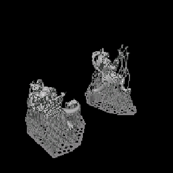 | P2609-37 | 2026-09-28 | 32mm_P0094_Athamaru_AB_S2P3_STL_1_202609281054.goo | Dragon Resin Durable Grey | 0.03mm | 2.8s | 27.0s | 5 | Athamaru A and B, the reprint of Brian's two rejections from P2609-02 (A's left leg, B's head and tail - support damage on the vendor's Lychee supports). Sliced in ELEGOO SatelLite at 10:54 on 2026-09-28 from the 32mm_ heroic STLs and sent to the printer by hand; not yet started. 1748 layers = 52.44mm, taller than either mesh's longest side, so both figures are tilted. The copy Logan put in sweeps/ is the 11:52 re-save of the same slice - identical size (46,475,277 bytes), layer count, settings and plate preview - so it was screened in place of the printer's file, and this row carries the printer's name because that is what runs. SatelLite wrote it (LiftHeight 0), not solidified and not needing it. SCREENED CLEAR 2026-09-28: 312 islands, largest 481px2 at 23.19mm, under the 1000px2 watch band; 190 cups, all but a handful the 2.6mm3 raft cells, with 0.9mm3 trapped above the raft. MESH FAMILY: the plate is 8,565mm3 against 4,175mm3 of 32mm A+B, a 105% support ratio in line with SatelLite's dense cages on the Horned Dragon wings; the standard pair (2,541mm3) would need 237%, so the volume and the filename agree on 32mm - consistent, not proven, since no supported-mesh export exists to weigh the figures on their own. CAVEAT: a clear screen does not measure support strength (P2609-27), and support damage is exactly what sent these back, so the print and Brian are the test, not this verdict. CONFIRMED by Logan (2026-09-28): both figures were sliced from the 32mm_ heroic STLs, 32mm_P0094_Athamaru_A_S2P3_STL and 32mm_P0094_Athamaru_B_S2P3_STL. That settles the mesh family the volume could only point at. PRINTED AND CLEANED (Logan, 2026-09-29); A and B ready for the next delivery to Brian. Whether the SatelLite supports avoided the leg, head and tail damage the Lychee supports left is his to judge at review | |||
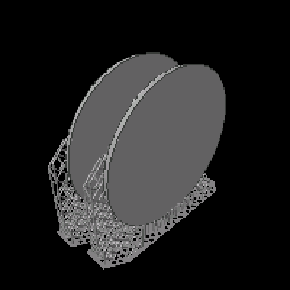 | P2609-36 | 2026-09-23 | 2x_pathfinder_base_75_1_202609231926.goo | Dragon Resin Durable Grey | 0.03mm | 2.8s | 27.0s | 5 | 2x 75mm | Two 75mm pathfinder bases, VERTICAL ON SUPPORTS at 27s, sliced 2026-09-23 19:26: 2668 layers = 80.04mm, which is a 75.05mm disc standing up plus the lift. PRINTED AND CLEANED (Logan, 2026-09-24), completing the 75mm backlog at 5 on hand. The preview shows both discs near upright on support cages, the P2609-32 route. RESIN: the plate is 36,800mm3 against 13,866.4mm3 of mesh each, so 4,533.7mm3 per base - 24.6% - went to supports and raft, about 9ml across the two. That is a better ratio than the 33% the 25mm bases pay upright, since a bigger part amortises its raft. WORTH TRYING FLAT NEXT TIME: a 75mm base is 3.84mm thick, so flat it is 128 layers and about 20 minutes against this plate's 2668 layers and roughly six hours, with no support waste at all. The peel load is the question, and the numbers say it is already answered: two 75mm discs flat is 8,848mm2 of solid cross-section, against the 8,550mm2 that P2609-34's eighteen 25mm discs carried through successfully at 6 deburr passes. Untested at this size, but the cheapest test on the board | ||
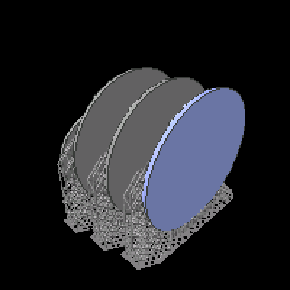 | P2609-35 | 2026-09-23 | bases_50_3x75_1_202609231029.goo | Dragon Resin Durable Grey | 0.03mm | 2.8s | 27.0s | 5 | 1x 50mm, 3x 75mm | One 50mm and three 75mm bases, printed VERTICAL ON SUPPORTS rather than flat (Logan, 2026-09-23) - the near-upright route proven at scale by P2609-32's twenty-four. Bottom exposure back to 27s, which is the supported setting; the 12s of the flat plates was tuned for a base sitting directly on the plate. Sent 2026-09-23 10:29 and printing. The Bases column waits until it comes off, and On hand stays Logan's to state. These are the two sizes the backlog still wants: 1x 50mm and 5x 75mm. PRINTED SUCCESSFULLY (Logan, 2026-09-23): one 50mm and three 75mm bases off the plate. With the 50mm backlog at 1 and the 75mm at 5, this covers the 50mm entirely and three of the five 75mm; two more 75mm are being printed next. On hand for both sizes still reads 0 and is Logan's to state | ||
 | P2609-33 | 2026-09-23 | 16x-12s-pathfinder_base_25_1_202609221729-deburr12.goo | Dragon Resin Durable Grey | 0.03mm | 2.8s | 12.0s | 5 | fail | Sixteen 25mm bases printed FLAT on the plate - no supports, no raft, no angle - at 12s bottom exposure, deburred with 12 tapered erode passes to leave a chamfer a spatula could enter under (Logan, 2026-09-22/23). 128 layers = 3.84mm, about 20 minutes. HALF THE BASES FAILED. The Bases column is left empty rather than guessing at the survivors; On hand in the Bases section is Logan's own count and is the authority. TWO THINGS CHANGED AT ONCE from the prints that worked, so this plate does not say which caused it: the count went from one base centred on the plate to sixteen, and the chamfer went from 4 passes to 12. Sixteen bases is also the largest solid cross-section this machine has run, roughly 7,600mm2 peeling on every one of 128 layers. A mechanism worth weighing against the chamfer: the same recess that lets a spatula start under the rim gives the peel force somewhere to start too, since a flat-bottomed disc has to fail across its whole face while a chamfered one can unzip from the edge. That is reasoning, not a measurement. The cheap way to separate the two is one plate of sixteen at 4 passes, the depth already proven on a single base, against a few bases at 12. THE FAILURES WERE THE LEFT SIDE OF THE PLATE (Logan, 2026-09-23), which changes what this plate is evidence of. A front-to-rear pattern would have been the peel sequence, since the vat hinges at the rear; a LEFT-RIGHT one is not explained by the tilt at all, because the peel line runs along X and reaches both sides at the same moment. It points instead at something fixed and asymmetric across the plate, and the leading candidate is levelling: a plate tilted about Y sits higher on the left, so the first layer is squeezed thinner there and bonds weakly, which is a detachment failure exactly like this one. LCD output falling off at that edge would do it too, though under-cure usually shows as weak or thin parts rather than clean detachment. So the chamfer may not be the culprit at all - sixteen bases is simply the first print wide enough to sample the plate across X. RESOLVED by P2609-34 (Logan, 2026-09-23): the same sixteen-base file at 6 passes instead of 12 produced all sixteen. Same positions, same 12s exposure, same cross-section - only the chamfer depth differs. So the count is not the problem and the confounding above is settled: **12 passes is too deep**. Read the left-side pattern accordingly - the asymmetry is real but sub-threshold, and it only shows when the adhesion margin has been eaten by the deeper chamfer. The left is where the plate runs out of margin first, not where a failure begins on its own. COUNT DISCREPANCY, measured 2026-09-23: the file is named 16x but the plate holds EIGHTEEN bases. Counted by connected components on layer 60 of the slice itself - 18 objects, all identical at 1290-1291px wide - and confirmed by the volume, which comes to 1421.3mm3 per base over 18 against the mesh's 1423.8mm3, where dividing by 16 gave an impossible 1598.9. So the slice is the authority over the filename here, the same way a plate holds more than its name says. Half of eighteen is nine, so nine were lost, not eight | ||
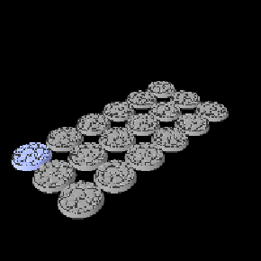 | P2609-34 | 2026-09-22 | 16x-12s-pathfinder_base_25_1_202609221729-deburr6.goo | Dragon Resin Durable Grey | 0.03mm | 2.8s | 12.0s | 5 | 18x 25mm | The twin of P2609-33 and the control that explains it: the same sixteen 25mm bases flat on the plate at 12s, from the same 17:29 slice, deburred with 6 passes instead of 12. FULLY SUCCESSFUL - all sixteen produced (Logan, 2026-09-23). 128 layers = 3.84mm. Between the two plates, the chamfer depth is the only variable: 6 passes (0.108mm of radius) holds everywhere, 12 (0.216mm) loses the left half. The usable ceiling for a flat base plate therefore sits between 6 and 12 passes, and 6 is proven. Logan's stated 53 on hand ALREADY INCLUDES these sixteen (2026-09-23), so do not add them again. COUNT DISCREPANCY, measured 2026-09-23: the file is named 16x but the plate holds EIGHTEEN bases. Counted by connected components on layer 60 of the slice itself - 18 objects, all identical at 1290-1291px wide - and confirmed by the volume, which comes to 1421.3mm3 per base over 18 against the mesh's 1423.8mm3, where dividing by 16 gave an impossible 1598.9. So the slice is the authority over the filename here, the same way a plate holds more than its name says. Logan reports sixteen produced, so two are unaccounted for - either they failed unnoticed or they are still stuck to the plate. His stated 53 on hand is a count of bases in hand and stands either way. RESIN PER BASE, measured 2026-09-23 from the slicers' own volume figures against the 1423.8mm3 pathfinder_base_25 mesh: upright on supports costs 2133.7mm3 per base, so 709.9mm3 - 33% - goes to supports and raft, while flat on the plate costs 1421.3mm3, which is the model itself and nothing else (the 2.5mm3 under is the deburr erode). The supported route uses 1.5x the resin, about 17ml of it in supports across a plate of twenty-four. CONFIRMED by Logan (2026-09-23): eighteen were on the plate, and the mismatch was a naming error - the SatelLite project was named correctly and the exported goo was not, which he has since corrected. So nothing was lost here and the 'two unaccounted for' above is withdrawn. The printer's copy still carries the old 16x name, which is what the Slicer file column records | ||
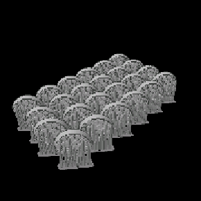 | P2609-32 | 2026-09-20 | pathfinder_base_25_1_202609201407.goo | Dragon Resin Durable Grey | 0.03mm | 2.8s | 27.0s | 5 | 24x 25mm | Twenty-four 25mm pathfinder bases on one plate, no minis (count from Logan, 2026-09-20). The same 986-layer setup as the P2609-31 single that came out clean, replicated across the plate: identical layer count and height, 29.58mm. Sent 2026-09-20 14:07 and printing. The Bases column stays empty until it has actually printed - that column records what a plate MADE, and P2609-27 is why: ten bases attempted, none produced. Watch the raft: P2609-31 came out clean but its raft shifted, and a shift across a raft this size would take the whole batch with it. On hand in the Bases section is Logan's to state once they are off the plate. ALL TWENTY-FOUR WORKED and are cleaned (Logan, 2026-09-23). So the near-upright setup scales: P2609-31 proved it on one base, this proves it on a full plate, and the raft shift that plate showed did not repeat. The Bases column records what the plate made; On hand in the Bases section stays Logan's to state. RESIN PER BASE, measured 2026-09-23 from the slicers' own volume figures against the 1423.8mm3 pathfinder_base_25 mesh: upright on supports costs 2133.7mm3 per base, so 709.9mm3 - 33% - goes to supports and raft, while flat on the plate costs 1421.3mm3, which is the model itself and nothing else (the 2.5mm3 under is the deburr erode). The supported route uses 1.5x the resin, about 17ml of it in supports across a plate of twenty-four | ||
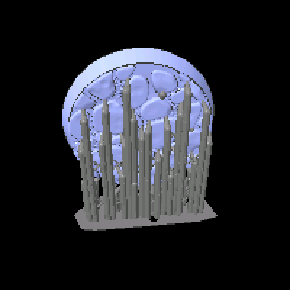 | P2609-31 | 2026-09-19 | pathfinder_base_25_1_202609192110.goo | Dragon Resin Durable Grey | 0.03mm | 2.8s | 27.0s | 5 | One 25mm pathfinder base on its own, the revised support test after P2609-27 lost ten bases off their supports: 986 layers = 29.58mm against P2609-28's 939 = 28.17mm, and the preview shows it standing closer to upright on a forest of much heavier pillars. CAME OUT CLEAN, but the raft shifted (Logan, 2026-09-20). So the supports themselves held, which is what this test was asking, and the shift is a separate matter: the raft moving during a print is adhesion or a mechanical slip, not support adequacy. Nothing here says whether it will repeat on a bigger raft. Not screened: P2609-27 screened perfectly clean and failed anyway, so a verdict says nothing about the question being asked | |||
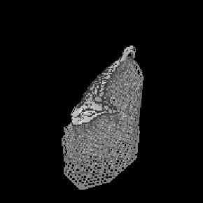 | P2609-30 | 2026-09-18 | P0059_Horned_Dragon_WingR_WP4_STL_2_202609181911-uvtools-solidify.goo | Dragon Resin Durable Grey | 0.03mm | 2.8s | 27.0s | 5 | Horned Dragon WingR alone, sliced in ELEGOO SatelLite on 2026-09-18, then put through `ledger.py solidify` (UVtools Solidify from layer 300). The reprint after P2609-25 printed well but had supports colliding with the wings: each wing now has its own plate and is rotated off its modelled orientation. Standard true-scale family, measured rather than assumed - splitting the exported supported mesh into connected shells weighs the wing on its own, and it comes out within 1.6% of the standard mesh and 33% under the 32mm one. Screened clear after solidifying: 157 islands, largest 270px2 at 22.80mm, 0 suction cups, 33 resin traps. Solidify took cups 4 -> 0, resin traps 875 -> 33, islands 164 -> 157, largest island unchanged at 270px2/22.80mm. 3126 layers = 93.78mm against a 74.81mm mesh, again because it is rotated. PRINTED WELL and cleaned (Logan, 2026-09-20); not yet with Brian | |||
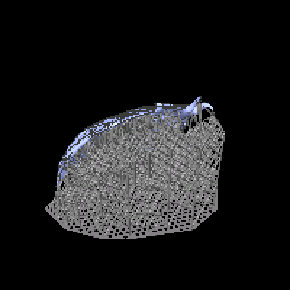 | P2609-29 | 2026-09-18 | P0059_Horned_Dragon_WingL_WP4_STL_1_202609181913-uvtools-solidify.goo | Dragon Resin Durable Grey | 0.03mm | 2.8s | 27.0s | 5 | Horned Dragon WingL alone, sliced in ELEGOO SatelLite on 2026-09-18, then put through `ledger.py solidify` (UVtools Solidify from layer 300). The reprint after P2609-25 printed well but had supports colliding with the wings: each wing now has its own plate and is rotated off its modelled orientation. Standard true-scale family, measured rather than assumed - splitting the exported supported mesh into connected shells weighs the wing on its own, and it comes out within 1.6% of the standard mesh and 33% under the 32mm one. Screened clear after solidifying: 158 islands, largest 333px2 at 27.51mm, 0 suction cups, 68 resin traps. Solidify took cups 4 -> 0, resin traps 1064 -> 68, islands 168 -> 158, largest island unchanged at 333px2/27.51mm. 2304 layers = 69.12mm, which is not the 88.19mm mesh height because the wing is rotated. Motion values read 0.05 from the UVtools re-save, measured harmless on P2609-24. PRINTED WELL and cleaned (Logan, 2026-09-19); not yet with Brian | |||
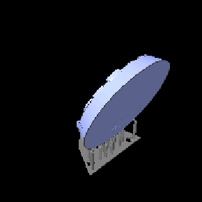 | P2609-28 | 2026-09-18 | pathfinder_base_25_1_202609181729.goo | Dragon Resin Durable Grey | 0.03mm | 2.8s | 27.0s | 5 | fail | One 25mm pathfinder base on its own, sliced 2026-09-18 17:29 and sent by hand: Logan's support test after P2609-27 lost ten of them off the supports at under 50% (Logan, 2026-09-18). 939 layers = 28.17mm against the failed plate's 954 = 28.62mm, so the orientation is close to what failed; whether the supports themselves changed is not visible in the plate preview. Not screened: P2609-27 screened perfectly clean and failed anyway, so a verdict on this one would say nothing about the question being asked, which is support strength. FAILED on warping (Logan, 2026-09-20): it completed the print - the supports held, unlike P2609-27's ten - but the base came out warped and is not usable. Nothing was produced, so the Bases column stays empty and On hand is unchanged. Logan's reading across the three attempts is that angling a base to print always warps it; the one that came out clean, P2609-31, stands closer to upright at 986 layers = 29.58mm against this plate's 939 = 28.17mm | ||
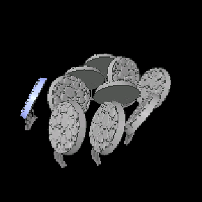 | P2609-27 | 2026-09-18 | pathfinder_base_25_1_202609181443.goo | Dragon Resin Durable Grey | 0.03mm | 2.8s | 27.0s | 5 | fail | Ten 25mm pathfinder bases on one plate, no minis (Logan, 2026-09-18): the count is his, the preview shows a cluster of tilted round bases. Sent to the printer 2026-09-18 14:43 and printing. Not screened: every print failure on record is a 50mm or 75mm model, and a flat base carries neither the cross-section nor the trapped volume that screening looks for. The Bases column records what the plate made; On hand in the Bases section is Logan's to state, and is not inferred from this. FAILED (Logan, 2026-09-18): the bases came off their supports at less than 50% complete, so the support structure was not sufficient. Nothing usable came off the plate, which is why the Bases column is empty rather than 10x 25mm - that column records what a plate MADE, and this one made nothing. On hand in the Bases section is unchanged at 7 for the same reason. Logan is printing a single base as a test before committing another full plate. Screened after the failure, while the file was still on the printer (2026-09-18): 471 islands, 0 suction cups, 92 resin traps, and the verdict is CLEAR - the largest island on the whole plate is 4px2, three orders of magnitude under the 2500px2 bar. So screening would not have caught this, and that is the point worth keeping: island detection measures unsupported new AREA and trapped resin, not how strongly a support holds. Checked whether the 471 tiny islands were themselves the tell - they are all <=5px2 in a narrow band from 6.66 to 16.14mm - and they are not: successful plates carry the same population, P2609-22 with 1,221 of them and P2609-25 with 406. What is unusual here is only that 100% of this plate's islands are tiny, there being no real geometry on a plate of bare discs. 954 layers = 28.62mm, so the discs were tilted steeply | ||
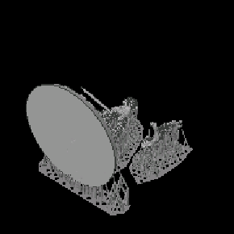 | P2609-26 | 2026-09-18 | P0037_Talmandor_body_wing_base_S1P2_STL_1_202609180938.goo | Dragon Resin Durable Grey | 0.03mm | 2.8s | 27.0s | 5 | 1x 50mm | Talmandor body, wing and one 50mm base on a single plate, sliced in ELEGOO SatelLite at 09:33 on 2026-09-18: 1833 layers = 54.99mm, 12,304mm3 / 13.7g, SatelLite's own estimate 04h37m. The standard-scale reprint - the 32mm print is too large (Logan, 2026-09-18). On this model the 32mm meshes measure 1.150x the standard ones (body 27.16 x 52.72 x 37.52 against 23.62 x 45.84 x 32.63; wing 21.15 x 34.94 x 27.87 against 18.39 x 30.38 x 24.23), the same mismatch as the Horned Dragon. The slice volume settles which family was used: standard body + wing (2,672mm3) plus pathfinder_base_50 (8,280mm3) leaves 1,352mm3 for supports and raft, where the 32mm pair with that base is 12,344mm3 on its own, more than the whole slice. Screened before printing 2026-09-18: 335 islands, one over the watch band at 2387px2/14.28mm and nothing over 2500 - under the old 1000px2 bar that would have read FIX. Cups are clean: 204 raft cells at 2.6mm3 each and only 0.5mm3 trapped above the raft across four pockets, the largest 0.15mm3 at 8.55mm; 1157 resin traps. Not on the printer as of 2026-09-18 09:40. The plate carries one 50mm base - record it in the Bases column once it has actually printed. PRINTING 2026-09-18 (Logan). Printed and cleaned successfully (Logan, 2026-09-18); not yet with Brian. The 50mm base it carried is recorded in the Bases column. The screen flag at 14.28mm is still open: the print finishing is not evidence anyone looked at that height. The file that actually ran is P0037_Talmandor_body_wing_base_S1P2_STL_1_202609180938.goo, the 09:33 slice re-saved five minutes later and sent by hand - same 1833 layers and a byte-identical plate preview, so the screening above is this file's. Recorded under the printer's name for that reason, as P2609-21, -22 and -23 were. Screen flag inspected 2026-09-23: no apparent issues at 14.26mm (Logan, 2026-09-23); the 2387px2 island produced no defect | ||
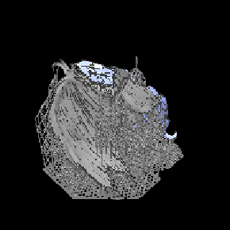 | P2609-25 | 2026-09-16 | P0059_Horned_Dragon_Wing_L_R_WP4_STL_1_202609160850_07h44m_39ml_uvtools-solidify.goo | Dragon Resin Durable Grey | 0.03mm | 2.8s | 27.0s | 5 | fail | Both Horned Dragon wings at standard scale, the 08:50 SatelLite slice put through UVtools Solidify to clear its resin traps, then sent to the printer by hand (Logan, 2026-09-16). Solidify took cups 23 -> 0 and all 223mm3 of trapped resin with them, resin traps 2280 -> 134, islands 510 -> 482 with the largest unchanged at 1033px2/68.67mm. Screened from the local slice 2026-09-18: 482 islands, 0 suction cups, 135 resin traps, and one island over the watch band at 1033px2/68.67mm - under the old 1000px2 bar that would have read FIX. Motion values read 0.05 rather than 0 because UVtools re-saved the file, measured harmless on P2609-24. Printed and cleaned successfully (Logan, 2026-09-18); not yet with Brian. Screen flag inspected 2026-09-18: printed and cleaned successfully (Logan, 2026-09-18); the 1033px2 island at 68.67mm produced no reported defect. UNUSABLE despite printing well (Logan, 2026-09-18): the supports collided with the wings themselves, so both parts have to be reprinted, each wing on its own plate and rotated. Result is fail for that reason and not because the run went wrong - it printed and cleaned cleanly, and the screen flag at 68.67mm produced no defect. The fault is in the support layout, which is what this plate records, so do not copy its arrangement | ||
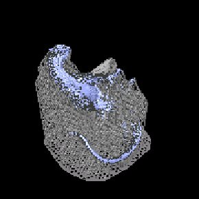 | P2609-24 | 2026-09-16 | P0059_Horned_Dragon_Body_Rock_WP4_STL_2_202609160848_06h37m_49ml_uvtools-solidify.goo | Dragon Resin Durable Grey | 0.03mm | 2.8s | 27.0s | 5 | Horned Dragon Body and Rocks at standard scale, the 08:48 SatelLite slice put through UVtools Solidify to clear its resin traps, then sent to the printer by hand (Logan, 2026-09-16). Screened after solidifying: cups 6 -> 0, resin traps 2155 -> 199, islands 747 -> 725 with the reported island list identical line for line, so only interior voids were filled. One island remains over the threshold, 1132px2 at 74.49mm, about 68.5mm up the body - inspect that height when it comes off; two EVO-supported plates have printed clean through bigger. Motion values read 0.05 rather than 0 because UVtools re-saved the file, and the machine does execute them (runlog: lift_distance 0.050000 @ lift_speed 0.000833) - at no cost. PRINTING 2026-09-16, measured at layer ~1497 of 2653 (44.93mm): 8.45s per layer, steady, extrapolating to 6.2h against SatelLite's 06h37m estimate. So a UVtools re-save is safe to print on this machine. Screen flag inspected 2026-09-17: printed and cleaned successfully (Logan, 2026-09-17); the 1132px2 island at 74.49mm produced no reported defect | |||
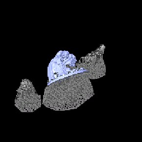 | P2609-23 | 2026-09-16 | 32mm-Paizo_PFQ_Signifer_Corps_A_1_202609160830.goo | Dragon Resin Durable Grey | 0.03mm | 2.8s | 27.0s | 5 | Three reprints on one plate, despite the filename naming only the Signifer: Living Waterfall from the standard true-scale mesh (its 32mm mesh printed too large), Brastlewark Snarecrafter from the 32mm heroic mesh re-supported in SatelLite, and Signifer Corps A re-exported at exactly 114%. Identical in size (125820374 bytes) and header (1697 layers = 50.91mm) to the 20:22 slice screened from sweeps/, re-saved at 08:30 and sent to the printer. Screened clean: 348 islands, none over 1000px2 (largest 401px2 at 17.40mm); largest suction cups 9.3mm3 from 41.04mm, 5.5mm3 from 14.01mm and 4.6mm3 from 37.98mm, all above the raft - worth a look at those heights. Printing 2026-09-16 (Logan). Printed and cleaned successfully (Logan, 2026-09-18); none of the three is with Brian yet. Its screen flag was retired on 2026-09-18 by the threshold revision rather than by inspection: the largest island above the raft is 401px2, under the new 1000px2 watch band | |||
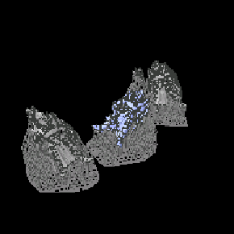 | P2609-22 | 2026-09-15 | 32mm-Paizo_PFQ_bastion_A_1_202609152004.goo | Dragon Resin Durable Grey | 0.03mm | 2.8s | 27.0s | 5 | Hellknight Bastions A, B and C on one plate, despite the filename naming only A: vendor meshes exported from Lychee without supports, all three at exactly 114%, re-supported in ELEGOO SatelLite. Identical in size (103035391 bytes), header (1479 layers = 44.37mm) and preview to the 09:30 slice screened from sweeps/, re-saved at 20:04 and sent to the printer. Screened clean: 1488 islands, none over 1000px2 (largest 700px2 at 21.57mm); largest cups above the raft 8.8mm3 from 36.33mm and 6.4mm3 from 32.40mm - worth a look at those heights. The reprint of the too-small first print, and the second comparison of SatelLite supports against the vendor's Lychee ones. Printed and cleaned successfully (Logan, 2026-09-16); not yet with Brian | |||
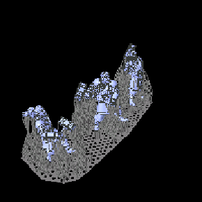 | P2609-21 | 2026-09-15 | 32mm-Paizo_PFQ_Augustana_irregulars_ABC_1_202609150905.goo | Dragon Resin Durable Grey | 0.03mm | 2.8s | 27.0s | 5 | Augustana Irregulars A, B and C on one shared raft: vendor meshes exported from Lychee without supports, re-supported in ELEGOO SatelLite, all three at 114%. The comparison against the vendor's Lychee supports. Byte-identical in size, header and preview to the 09:01 slice screened from sweeps/ (1601 layers = 48.03mm; no island over 1000px2). Printed and cleaned successfully (Logan, 2026-09-16); not yet with Brian. The first extras reprint on SatelLite supports, so Brian's verdict on surface quality is the comparison against the vendor's Lychee supports | |||
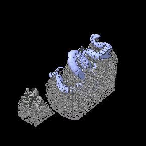 | P2609-20 | 2026-09-14 | P0100_Scylla_Tentacles_S2PB_STL_1_202609141610.goo | Dragon Resin Durable Grey | 0.03mm | 2.8s | 27.0s | 5 | Scylla Tentacles and Body on one plate (Body confirmed by Logan, 2026-09-14) - the separate-parts route with new supports, sliced in ELEGOO SatelLite, after the one-piece Full scarred on support removal. Printed to completion and cleaned (Logan, 2026-09-15). Tentacles clean at ~61mm despite the two islands over 1000px2 - "one of the best prints so far" (Logan). Not yet with Brian. Screened before printing: 325 islands, TWO over 1000px2 - 1681px2 at 61.17mm and 1215px2 at 61.08mm, with a third of 996px2 at 61.08mm, all clustered at X~6700-6900 Y~1190-1320, i.e. one under-supported spot on the Tentacles. Largest cup above the raft 6.5mm3 at 55.65mm; 116 layer-0 cups, 2.6mm3 each, 290mm3 total. Logan is running it as sliced on SatelLite's EVO supports, not re-supported (2026-09-14). Support settings per part (Logan): Body on EVO_0-30mm, Tentacles on EVO_60-100mm. That tests the 1000px2 threshold against EVO supports directly; check ~61mm on the Tentacles when it comes off | |||
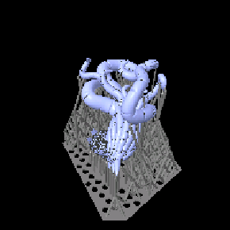 | P2609-19 | 2026-09-14 | P0031_Sarglagon_Drowning_Devil_Arm_R_S1P1_STL_1_202609140955.goo | Dragon Resin Durable Grey | 0.03mm | 2.8s | 27.0s | 5 | Sarglagon (Drowning Devil) Arm R reprint, sliced in ELEGOO SatelLite. Printed successfully (Logan, 2026-09-14); not yet with Brian. Screened after printing: 70 islands, none over 1000px2 (largest 917px2 at 16.08mm, then 484px2 at 15.57mm and 368px2 at 26.61mm). 87 suction cups, all at layer 0, 2.6mm3 each, 223mm3 total | |||
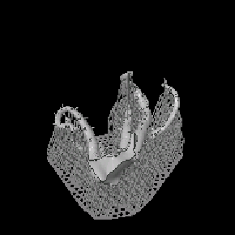 | P2609-18 | 2026-09-13 | P0099_Gutaki_Tentacles_L_S2P3_STL_2_202609132035.goo | Dragon Resin Durable Grey | 0.03mm | 2.8s | 27.0s | 5 | Gutaki Tentacles L at default size, sliced in ELEGOO SatelLite. Printed great (Logan, 2026-09-14); not yet with Brian. Screened after printing: 38 islands, none over 1000px2 (largest 637px2 at 15.27mm; 7 over 300px2 between 14.67 and 20.46mm). 363 suction cups at layer 0, 2.6mm3 each, 931mm3 total. Adhered, where the Lychee-supported P2609-11 did not | |||
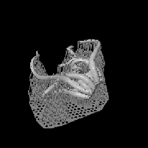 | P2609-17 | 2026-09-13 | P0099_Gutaki_Tentacles_R_S2P3_STL_1_202609131456.goo | Dragon Resin Durable Grey | 0.03mm | 2.8s | 27.0s | 5 | Gutaki Tentacles R at default size, sliced in ELEGOO SatelLite. Printed (Logan, 2026-09-13); outcome not yet judged. Screened after printing: 161 islands, none over 1000px2 (largest 441px2 at 23.31mm). 418 suction cups at layer 0, 2.6mm3 each, 1071mm3 total. It adhered anyway, where the two Lychee-supported attempts (P2609-10.1, -11) did not | |||
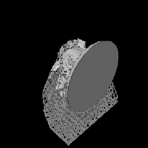 | P2609-16 | 2026-09-12 | P0099_Gutaki_Body_S2P3_STL_3_202609122351.goo | Dragon Resin Durable Grey | 0.03mm | 2.8s | 27.0s | 5 | Gutaki Body at default size, sliced in ELEGOO SatelLite. Printed successfully off the plate (Logan, 2026-09-13); not yet with Brian. Screened after printing: 150 islands, one over 1000px2 (2326px2 at 22.59mm - check that height on review), largest cup 35.5mm3 at 49.23mm. 220 suction cups at layer 0, 2.6mm3 each, 563mm3 total - more raft vacuum than P2609-15's 380mm3 in cells a quarter the size, and it still printed | |||
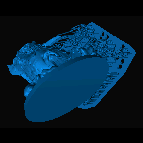 | P2609-15 | 2026-09-12 | P0099_Gutaki_Body_S2P3_STL_0.stl_0.030_2.800_2026_09_12_19_58.goo | Dragon Resin Durable Grey | 0.03mm | 2.8s | 27.0s | 5 | fail | Gutaki Body, default size, solid, Blueprint auto-orient and auto supports. 1931 layers = 57.9mm, ~1mm support elevation. Screened: 1 island over 1000px2 (1544px2 at 12.45mm) and largest cup 18.9mm3, both far better than the hollowed P2609-14. But 34 suction cups all start at layer 0, ~11.2mm3 each, 380mm3 total - the raft cells sealed by the low elevation. FAILED at about 70% (Logan, 2026-09-13): it adhered, then separated from its supports under pull force. 70% of 1931 layers is about layer 1350 (40.5mm), between the screen's two largest non-raft suction cups (18.9mm3 from 38.88mm, 17.2mm3 from 43.44mm) - a candidate cause, not a confirmed one. This failure is why Logan moved to ELEGOO SatelLite, whose support generation is designed for tilting-vat printers | ||
| P2609-14 | 2026-09-12 | P0099_Gutaki_Body_S2P3_Blueprint-Supports.stl_0.030_2.800_2026_09_12_19_37.goo | Dragon Resin Durable Grey | 0.03mm | 2.8s | 27.0s | 5 | CANCELLED before completion. Gutaki Body at default size, hollowed, Blueprint supports. Screening found 47 suction cups, largest 3443mm3 from 23.55mm, against 2mm3 on the solid Scylla - hollowing traded islands for suction. Not run to completion | ||||
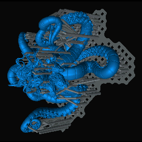 | P2609-13 | 2026-09-12 | P0100_Scylla_Full_S2PB_STL.stl_0.030_2.800_2026_09_12_11_10.goo | Dragon Resin Durable Grey | 0.03mm | 2.8s | 27.0s | 5 | fail | Scylla reprint: manual supports on the raw STL, moved right, 2125 layers = 63.8mm, 2.8s. Screened after starting: suction cups down from 330 to 5, but one island of 11992px2 at 22.92mm - larger than the 8520px2 that failed on P2609-12. Printed to completion, but removing the supports left lots of surface scarring (Logan, 2026-09-14), so Scylla moves to the separate Body + Tentacles route | ||
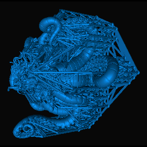 | P2609-12 | 2026-09-11 | P0100_Scylla_Full_S2PB_SUP.stl_0.030_3.000_2026_09_11_20_54.goo | Dragon Resin Durable Grey | 0.03mm | 3.0s | 27.0s | 5 | fail | Scylla one-piece at true scale on vendor Lychee supports, as a whole-model test. Failed: layer defects at 17.03mm and 32.6mm. UVtools finds 318 islands, 330 suction cups and 1175 resin traps; the two largest islands are at 17.13mm and 31.71mm, matching the defects. 92% of island area is in the centre third of the plate | ||
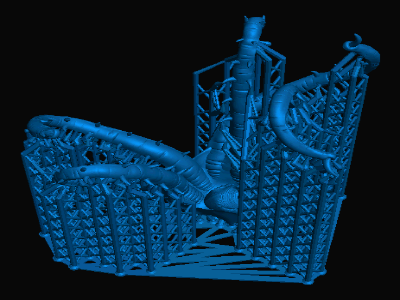 | P2609-11 | 2026-09-11 | 32mm_P0099_Gutaki_Tentacles_L_S2P3_SUP.stl_#4_0.030_3.000_2026_09_11_08_36.ctb | Dragon Resin Durable Grey | 0.03mm | 3.0s | 27.0s | 5 | 0.03mm @ 0.05 | fail | Gutaki Tentacles L only; failed to adhere to the build plate | |
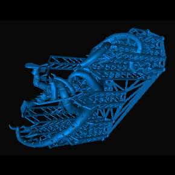 | P2609-10.1 | 2026-09-10 | 32mm_P0099_Gutaki_Tentacles_R_S2P3_SUP.stl_#2_0.030_2.800_2026_09_10_21_22.goo | Dragon Resin Durable Grey | 0.03mm | 2.8s | 27.0s | 5 | fail | Gutaki Tentacles R; bottom parts did not connect to the supports | ||
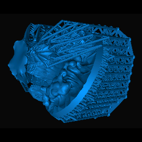 | P2609-10 | 2026-09-10 | 32mm_P0099_Gutaki_Body_S2P3_SUP.stl_#1_0.030_2.800_2026_09_09_22_45.goo | Dragon Resin Durable Grey | 0.03mm | 2.9s | 27.0s | 5 | fail | Gutaki Body reprint at 2.9s set on the printer (file says 2.8s, confirmed from the runlog), new FEP. Printed, but warped during printing | ||
 | P2609-09 | 2026-09-09 | 32mm_P0099_Gutaki_Body_S2P3_SUP.stl_#1_0.030_2.800_2026_09_09_22_45.goo | Dragon Resin Durable Grey | 0.03mm | 2.8s | 27.0s | 5 | fail | Gutaki Body; large body separated from the supports in the final layers. FEP release film replaced and exposure raised 0.1s to 2.9s before the next attempt | ||
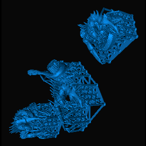 | P2609-08 | 2026-09-09 | 32mm_P0098_Reefclaw_A_S2P3_SUP.stl_0.030_2.800_2026_09_09_18_41.goo | Dragon Resin Durable Grey | 0.03mm | 2.8s | 27.0s | 5 | pass | Reefclaw A/B/C | ||
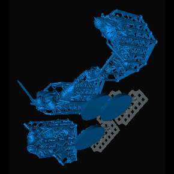 | P2609-06 | 2026-09-09 | 32mm_P0097_Draugr_ABC_S2P3_SUP.stl_0.030_2.800_2026_09_09_09_33.goo | Dragon Resin Durable Grey | 0.03mm | 2.8s | 27.0s | 5 | 3x 25mm | pass | Draugr A/B/C | |
| P2609-03 | 2026-09-08 | 32mm_P0095_Rigger_S2P3_SUP.stl_0.030_2.800_2026_09_08_15_54.goo | Dragon Resin Durable Grey | 0.03mm | 2.8s | 27.0s | 5 | 12x 25mm | Rigger + Subaquatic Marauder; 1824 layers | |||
| P2609-02 | 2026-09-08 | 32mm_P0094_Athamaru_A_S2P3_PRE.stl_0.030_2.800_2026_09_08_09_53.ctb | Dragon Resin Durable Grey | 0.03mm | 2.8s | 27.0s | 5 | 0.03mm @ 0.05 | encrypted ctb, decrypted with UVtools | |||
| P2609-01 | 2026-09-07 | 32mm_P0028_Hellknight_Signifer_S1P1_STL.stl_0.030_2.800_2026_09_07_21_29.goo | Dragon Resin Durable Grey | 0.03mm | 2.8s | 27.0s | 5 | reprint of P0028 after Brian rejected the original | ||||
| P2609-07 | 2026-09-05 | 6x-pathfinder_base_50mm.goo | Elegoo 8K Standard Gray | 0.03mm | 1.9s | 27.0s | 4 | 6x 50mm | pass | bases only, no minis on this plate | ||
| P2609-05 | 2026-09-02 | 32mm_P0089_Cheliax_Naval_Officer_S2P2_STL.stl_0.030_1.500_2026_09_02_08_16.goo | Elegoo 8K Standard Gray | 0.03mm | 1.5s | 27.0s | 4 | |||||
| P2609-04 | 2026-09-01 | 32mm_P0059_Horned_Dragon_Body_WP4_STL.stl_0.030_1.500_2026_09_01_12_24.goo | Elegoo 8K Standard Gray | 0.03mm | 1.5s | 27.0s | 4 | re-supported STL; the vendor _SUP mesh detached under peel force | ||||
| P2608-01 | 2026-08-30 | Signifer-flotsam-captain-marauder.goo | Elegoo Abs-like 3.0 | 0.03mm | 1.9s | 27.0s | 4 | |||||
| — | P2610-00 | ? | ? | Elegoo Abs-like 3.0 | ? | ? | ? | ? | Legacy plate for the first Graveknight print, before plate tracking: the sword printed but sheared off; the resin was the brittle ABS-like (Logan, 2026-10-07). Resin set to Abs-like 3.0 because the Graveknight is in the August extras sale (Logan: August prints used it). | |||
| — | P2608-02 | ? | ? | Elegoo Abs-like 3.0 | ? | ? | ? | ? | Legacy plate, not a real print run: stands for the unplated prints of 202608 August extras sale, which predate plate tracking. All printed in Elegoo Abs-like 3.0 (Logan, 2026-10-07). Settings and date unknown; parts on it were not necessarily batched together. | |||
| — | P2608-00 | ? | ? | Elegoo Abs-like 3.0 | ? | ? | ? | ? | Legacy plate, not a real print run: stands for the unplated prints of 202608 August Release, which predate plate tracking. All printed in Elegoo Abs-like 3.0 (Logan, 2026-10-07). Settings and date unknown; parts on it were not necessarily batched together. | |||
| — | P2607-00 | ? | ? | Elegoo 8K Standard Gray | ? | ? | ? | ? | Legacy plate, not a real print run: stands for the unplated prints of 202607 July release, which predate plate tracking. All printed in Elegoo 8K Standard Gray (Logan, 2026-10-07). Settings and date unknown; parts on it were not necessarily batched together. | |||
| — | P2606-00 | ? | ? | Elegoo 8K Standard Gray | ? | ? | ? | ? | Legacy plate, not a real print run: stands for the unplated prints of 202606 June Release, which predate plate tracking. All printed in Elegoo 8K Standard Gray (Logan, 2026-10-07). Settings and date unknown; parts on it were not necessarily batched together. | |||
| — | P2605-00 | ? | ? | Elegoo 8K Standard Gray | ? | ? | ? | ? | Legacy plate, not a real print run: stands for the unplated prints of 202605 May Release, which predate plate tracking. All printed in Elegoo 8K Standard Gray (Logan, 2026-10-07). Settings and date unknown; parts on it were not necessarily batched together. | |||
| — | P2604-01 | ? | ? | Elegoo 8K Standard Gray | ? | ? | ? | ? | Legacy plate, not a real print run: stands for the unplated prints of 202604 Dragons, which predate plate tracking. All printed in Elegoo 8K Standard Gray (Logan, 2026-10-07). Settings and date unknown; parts on it were not necessarily batched together. | |||
| — | P2604-00 | ? | ? | Elegoo 8K Standard Gray | ? | ? | ? | ? | Legacy plate, not a real print run: stands for the unplated prints of 202604 April Release, which predate plate tracking. All printed in Elegoo 8K Standard Gray (Logan, 2026-10-07). Settings and date unknown; parts on it were not necessarily batched together. |